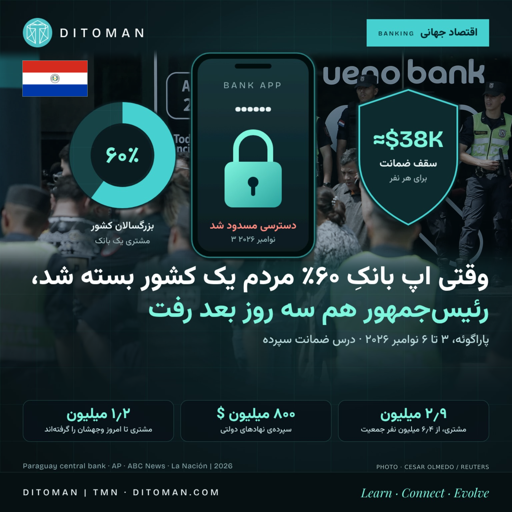

وقتی اپ بانکِ ۶۰٪ مردم یک کشور بسته شد، رئیسجمهور هم رفت
When the Banking App of 60% of a Country Shut Down, the President Went Too
What happened to Paraguay's Ueno Bank between 3 and 6 November 2026, how deposit guarantees work, and which patterns repeat in bank crises.
بین ۳ تا ۶ نوامبر ۲۰۲۶ چه بر سر بانک Ueno در پاراگوئه آمد، ضمانت سپرده چطور کار میکند، و کدام الگوها در بحرانهای بانکی تکرار میشوند.
تصور کن صبح سهشنبه ۳ نوامبر ۲۰۲۶ اپ بانکت را باز میکنی و حتی موجودیات را نمیبینی. برای حدود ۲٫۹ میلیون نفر در پاراگوئه، کشوری با حدود ۶٫۴ میلیون جمعیت، همین اتفاق افتاد. این مقاله میگوید چه شد، چرا، پول چه کسانی گیر افتاد، ضمانت سپرده چقدر است و چه الگوهایی در بحرانهای دیگر هم دیده شده.
۰۱. خط زمانی
- دوشنبه ۲ نوامبر: ناظران بانکی گزارش دادند بانک Ueno به شرکتهای وابسته به گروه مالکش وام داده و هزینههایی را بهاشتباه «دارایی» حساب کرده است.
- سهشنبه ۳ نوامبر: با اصلاح دفاتر، سرمایهی بانک به کمتر از نصف حداقل قانونی رسید (در گزارشها نسبت کفایت سرمایه حدود ۵٫۶٪ در برابر حداقل ۱۲٪ آمده). بانک مرکزی بانک را در اختیار گرفت؛ اپ، کارت و شعب از کار افتادند. برای ۸ مدیر حکم بازداشت صادر شد، از جمله بنیانگذار و رئیس بانک.
- چهارشنبه ۴ نوامبر: قانونی امضا شد که بازگرداندن بیشتر سپردهها را ظرف ۵ روز الزامی میکند. ۳۵ نماینده طرح استیضاح رئیسجمهور را ثبت کردند. رئیس بانک مرکزی به درخواست رئیسجمهور استعفا داد.
- پنجشنبه ۵ نوامبر: رهبر حزب حاکم کلرادو از استیضاح حمایت کرد. سانتیاگو پنیا ضمن بحث مجلس نمایندگان در یک ویدیو استعفا اعلام کرد. نمایندگان طرح استیضاح را تصویب کردند و پرونده به سنا رفت. مجلس استعفا را نپذیرفت.
- جمعه ۶ نوامبر: سنا با ۴۴ رأی او را بهدلیل «بد عملکردی» برکنار کرد. معاون او، پدرو آلیانا، باید تا ۲۰۲۸ دوره را کامل کند. برخی رسانهها از بازداشت خانگی پنیا خبر دادند.
- شنبه ۷ نوامبر: طبق گزارشها، بازجویی از او در دادستانی پیشبینی شده بود.
۰۲. بانکی که یکشبه بزرگ شد
Ueno از یک مؤسسهی مالی کوچک (Financiera Ueno) آمد و مجوز بانکی را در ۲۰۲۳ گرفت. در کمتر از پنج سال به بانکی با بیش از ۷۰ شعبه، بازگشت نقدی روی خرید خواربار و اسپانسری تیم ملی فوتبال و استادیوم اصلی تبدیل شد. خودش میگفت حدود ۶۰٪ بزرگسالان کشور مشتریاش هستند و روزانه بیش از ۳ میلیون تراکنش انجام میشود. از نگاه ناظر، چنین بانکی «بزرگتر از آن است که بشود بیسروصدا بستش».
۰۳. چرا سقوط کرد؟ (طبق اطلاعات فعلی)
- وام به وابستگان: بانک مرکزی میگوید ماهها تحقیق نشان داده وامهایی به شرکتهای مرتبط با گروه مالک پرداخت شده. اسوشیتدپرس گزارش داده در یک روز از سپتامبر ۲۰۲۵ نزدیک به ۳۹ میلیون دلار به سه شرکت وابسته به مالکان رفته است.
- حسابداری: هزینههایی که بهاشتباه «دارایی» ثبت شده بود؛ با اصلاح، سرمایه فروریخت.
- نظارت: سناتورها ادعا میکنند نظارت ضعیف و تضاد منافع در کار بوده. این هنوز ادعاست و در دادگاه اثبات نشده.
نکتهی حقوقی. اتهامها (نقض امانت، کلاهبرداری، دخالت در بحران) هنوز در مرحلهی تحقیقاند و کسی محکوم نشده است. دادستانی ۲۷ نفر از مدیران و وابستگان را متهم کرده و برای ۶ نفر بازداشت موقت و برای ۲ نفر حبس خانگی صادر شده.
۰۴. گره سیاسی
پنیا اقتصاددان سابق صندوق بینالمللی پول است و تا ۲۰۲۵ در شرکت مادر Ueno سهام داشت. او میگوید سهامش را فروخته و با تحقیقات همکاری میکند. او رئیس بانک مرکزی، کارلوس کاروالیو، را منصوب کرد که پیشتر رئیس Financiera Ueno بود؛ کاروالیو در همین بحران استعفا داد. پنیا تا همین اواخر هم از Ueno و نظارت بانک مرکزی دفاع کرده بود. دادستان کل سه تحقیق کیفری باز کرده: نظارت بر بانک، نحوهی مدیریت سقوط، و سپردهگذاری پول عمومی در آن؛ بعضی از آنها مقامهای فعلی و سابق از جمله پنیا را در برمیگیرد. اینکه آیا او مسئول است، کار دادگاه است.
۰۵. پول چه کسانی گیر افتاد؟
- مردم عادی: بیش از ۲٫۹ میلیون مشتری؛ حدود ۲۸۰ هزار نفر فقط در همین بانک حساب داشتند.
- پول عمومی: حدود ۸۰۰ تا ۸۵۰ میلیون دلار سپردهی دولتی، از جمله صندوق بازنشستگی و درمان (IPS، حدود ۳۵۵ تا ۳۸۰ میلیون دلار) و اپراتورهای سدهای برقآبی. اسوشیتدپرس آن را حدود یکچهارم کل سپردهها نوشته و یک منبع دیگر نزدیک یکسوم؛ رقم کل سپردهها رسماً در منابع من نبود.
- بازنشستگان: حدود ۳۲ هزار بازنشسته مستمریشان را از Ueno میگرفتند.
- فروشگاهها: فروش فروشگاههای عضو در دو روز اول بیش از ۳۵٪ افت کرده بود.
۰۶. ضمانت سپرده چقدر است و چه شد؟
صندوق ضمانت سپردهی پاراگوئه تا ۷۵ برابر حداقل حقوق ماهانه، حدود ۲۲۸ میلیون گوارانی (تقریباً ۳۷ تا ۳۹ هزار دلار) برای هر نفر یا شخص حقوقی پرداخت میکند. برآورد رسمی این است که حدود ۹۷٪ سپردهگذاران کاملاً پوشش داده میشوند. پرداخت اول تا ۱۰ میلیون گوارانی است و بقیه طبق جدولی که بانک مرکزی اعلام میکند؛ بدهی مشتری به بانک از مبلغ کسر میشود. مهلت قانونی ۱۵ روز است و تا ۱۵ روز دیگر قابل تمدید.
طبق گزارشهای رسانهای از قول بانک مرکزی، تا ۷ نوامبر حدود ۱٫۲ میلیون مشتری تمام یا بخشی از وجهشان را دریافت کردهاند و مجموع آن حدود ۱۶۰ میلیون دلار بوده است. من متن رسمی اعلامیه را مستقیم ندیدم.
۰۷. این الگو جای دیگر هم دیده شده
- قبرس ۲۰۱۳: سپردههای بالای ۱۰۰ هزار یورو در بانکهای بحرانزده بخشی از زیان را تحمل کردند.
- آرژانتین ۲۰۰۱: «کورالیتو»؛ سقف برداشت از حسابها.
- لبنان از ۲۰۱۹: محدودیتهای غیررسمی برداشت که سالها ادامه یافت.
- آمریکا ۲۰۲۳: سقوط SVB؛ سپردههای بالاتر از سقف ۲۵۰ هزار دلار هم با تصمیم استثنایی حفظ شد، که تضمین دفعهی بعد نیست.
- پرتغال ۲۰۱۴: بانک اسپیریتو سانتو با دخالت نهاد حلوفصل به «نوو بانکو» منتقل شد.
این فهرست پیشبینی نیست که کدام کشور بعدی است. عوامل مشترک: بانکی بزرگ و پرمشتری، وام به وابستگان، ناظر دیرجنبان، پول عمومی متمرکز در یک بانک، ضمانتی کوچک نسبت به درآمد مردم و ارتباط نزدیک سیاست و مالکیت بانک. سقف ضمانت در کشورهای مختلف فرق دارد: ۱۰۰ هزار یورو در اتحادیهی اروپا و پرتغال، ۲۵۰ هزار دلار در آمریکا و حدود ۳۸ هزار دلار در پاراگوئه.
۰۸. نگاه دیتومان
این برداشت ماست: «بانک دیجیتال» یعنی تجربهی کاربری بهتر، نه لزوماً ریسک کمتر. سه پرسش ساده: سقف ضمانت سپرده در کشور من چقدر است؟ چه بخشی از پولم بالاتر از آن است؟ و آیا همهی پولم در یک بانک است؟ برای کسی که بین چند کشور و چند بانک کار میکند، پراکنده کردن حسابها، دانستن سقف ضمانت و داشتن یک مسیر پرداخت جایگزین جزو مدیریت ریسک است.
منابع
- AP via ABC News: Paraguay president resigns amid bank collapse (۵ نوامبر ۲۰۲۶) • abcnews.com
- ABC News (استرالیا): Collapse of Paraguay's Ueno Bank plunges country into political crisis (۶ نوامبر ۲۰۲۶) • abc.net.au
- La Nación (آرژانتین): برکناری پنیا توسط سنا (۶ نوامبر ۲۰۲۶) • lanacion.com.ar
- Revista Mercado: Ueno Bank، سپردهها و وضعیت مدیران • revistamercado.do
- DolarHoy: بازگرداندن سپردهها و صندوق ضمانت • dolarhoy.com
- DPL News: Nubicom و پیوندهای Ueno • dplnews.com
- گزارشهای رسانهای از اعلام بانک مرکزی پاراگوئه دربارهی ۱٫۲ میلیون مشتری (El Comercio، El Universal، El Economista)
اعداد از گزارش رسانههاست و ممکن است بهروز شود؛ منابع در برخی ارقام (کل سپردهها، بازداشت خانگی) اختلاف دارند. این متن توصیهی مالی نیست. • Figures come from press reports and may change; sources differ on some details.